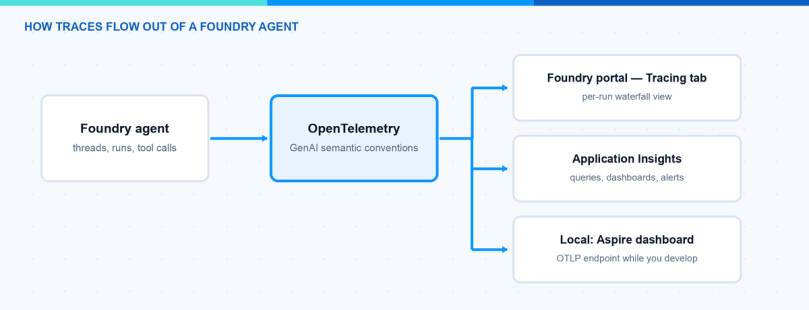
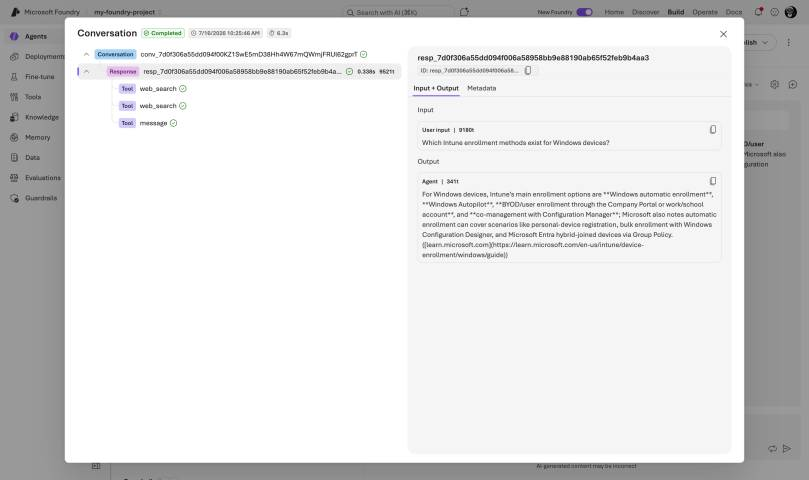
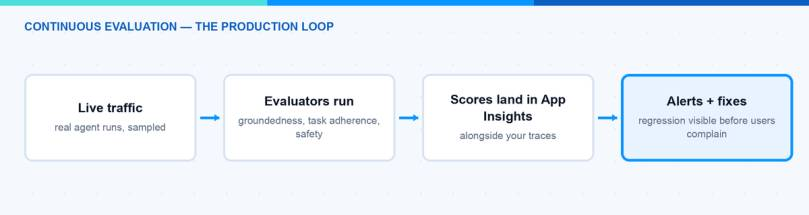
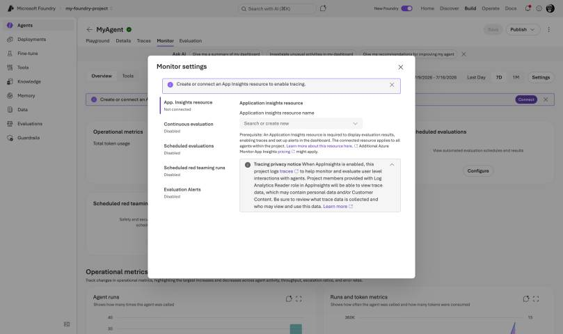
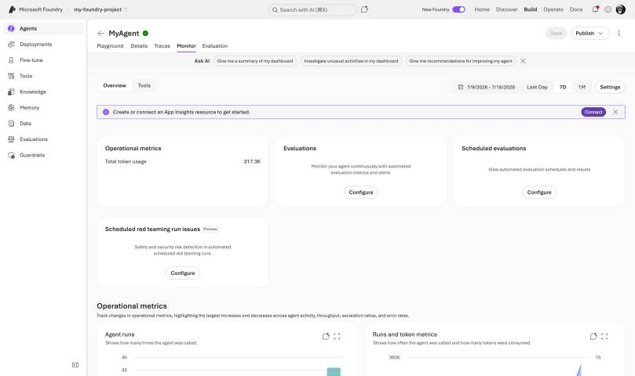

An AI agent that works in the playground is maybe twenty percent of the job. The other eighty percent start when real users hit it and you need to answer questions like: why did this run take 40 seconds, which tool call failed, and did the answer quality drop since Tuesday? In this blog post I do a deep dive into observability for agents in Microsoft Foundry: tracing, monitoring dashboards, continuous evaluation on live traffic and alerting. This is the production counterpart to my post about evaluating AI agents in Microsoft Foundry — that one is about testing before you ship, this one is about watching after you ship.
How Is Observability Structured in Foundry?
Microsoft splits observability into three pillars: evaluation (before production), tracing (what exactly happened in a run) and monitoring (how the agent behaves over time). The stack was announced at Ignite 2025 and became generally available in March 2026 — evaluations, monitoring and tracing are GA now, while individual pieces like the dashboard views and many agent evaluators still carry a preview label. Everything is built on open standards: OpenTelemetry with the GenAI semantic conventions, stored in Azure Monitor Application Insights.
That last part matters more than it sounds. Because the format is standard OTel, the same traces work in the Foundry portal, in Application Insights, in Grafana, and even in a local dashboard on your machine. You are not locked into a proprietary trace viewer, and instrumentation you build today survives a framework change tomorrow.

How Do I Turn On Tracing?
The part that got really easy: server-side tracing needs zero code. You connect an Application Insights resource once, and Foundry logs traces for prompt agents and hosted agents automatically. The exact click path:
- Sign in to ai.azure.com (New Foundry toggle on) and open your project.
- In the navigation click Agents, then the Traces tab, then Connect.
- Pick an existing Application Insights resource or create a new one. Alternative path: project dropdown → Project details → Connected resources → Add connection → Application Insights.
- Run the agent once. Traces appear within minutes.
Each trace captures the user input, every tool call with arguments and results, retrieval operations, run steps, token counts per step, latency and exceptions. The portal view shows the last 90 days; the actual retention and billing follow your Application Insights and Log Analytics configuration. To read traces, a user needs the Log Analytics Reader role on the Application Insights resource.

For the full picture you add client-side instrumentation in your own code, so your application spans and the Foundry spans are stitched together in one trace:
import os
os.environ["AZURE_EXPERIMENTAL_ENABLE_GENAI_TRACING"] = "true"
# capture prompts/responses in spans - dev only, this is user content!
os.environ["OTEL_INSTRUMENTATION_GENAI_CAPTURE_MESSAGE_CONTENT"] = "true"
from azure.identity import DefaultAzureCredential
from azure.ai.projects import AIProjectClient
from azure.ai.projects.telemetry import AIProjectInstrumentor
from azure.monitor.opentelemetry import configure_azure_monitor
project = AIProjectClient(endpoint=os.environ["AZURE_AI_PROJECT_ENDPOINT"],
credential=DefaultAzureCredential())
configure_azure_monitor(
connection_string=project.telemetry.get_application_insights_connection_string())
AIProjectInstrumentor().instrument()
Note: The content capture switch logs full prompts and responses into your telemetry. That is gold for debugging and a data protection problem in production. I keep it on in dev and off in prod, and rely on sampled continuous evaluation instead. Treat the Application Insights resource like a log store with sensitive data: restrict access and set retention deliberately.
Hint: While developing I do not even use Azure Monitor. The OTLP exporter can point at a local Aspire dashboard (localhost:4317), or you use the Microsoft Foundry Toolkit for VS Code, which ships a local trace viewer. Instant feedback, no cloud round trip.
Note: One compliance tension to know: trace ingestion has no private network path yet. If you run the fully isolated setup from my Secure Microsoft Foundry post, you must allow the Application Insights egress FQDNs on the firewall to get observability.
What Do I Get in the Traces?
Foundry uses the OpenTelemetry GenAI semantic conventions plus the newer agent conventions that Microsoft co-developed: spans like invoke_agent and execute_tool with tool arguments and results, plus agent-to-agent interaction spans. The same conventions are emitted by the Microsoft Agent Framework, LangChain, LangGraph and the OpenAI Agents SDK — so a multi-framework landscape produces uniform traces. The Conversations view links a Response ID or Trace ID to the full dialogue history, which is exactly what you need when a user reports a strange answer from yesterday.
In practice I use the trace view for three questions:
- Latency: which span eats the time — the model, a tool, or retrieval?
- Tool failures: did the agent call the right tool with the right arguments, and what came back?
- Token cost per run: which step burns the budget? Often it is one chatty tool response that gets fed back into the model.
One status detail: tracing for prompt and hosted agents is GA, tracing for workflows and external agents is still preview (as of mid-2026).
How Does Continuous Evaluation Work?
This is my favorite feature of the whole stack. Offline evaluation before a release tells you the agent was good on your test set. Continuous evaluation evaluates sampled live traffic in near real time — groundedness, task adherence, tool call accuracy, safety — and writes the scores next to your traces in Application Insights.

One permission step first: the project’s managed identity needs the Foundry User role on the Foundry resource, otherwise the rules silently do nothing. Assign it in the Azure portal under Access control (IAM), with the project managed identity as member.
With the current SDK (azure-ai-projects 2.x) continuous evaluation is an event-driven evaluation rule — you define an eval with evaluators, then a rule that fires when a response completes:
eval_object = openai_client.evals.create(
name="Continuous Evaluation",
data_source_config={"type": "azure_ai_source", "scenario": "responses"},
testing_criteria=[{"type": "azure_ai_evaluator", "name": "violence_detection",
"evaluator_name": "builtin.violence"}])
from azure.ai.projects.models import (EvaluationRule,
ContinuousEvaluationRuleAction, EvaluationRuleFilter, EvaluationRuleEventType)
project_client.evaluation_rules.create_or_update(
id="my-continuous-eval-rule",
evaluation_rule=EvaluationRule(
action=ContinuousEvaluationRuleAction(eval_id=eval_object.id, max_hourly_runs=100),
event_type=EvaluationRuleEventType.RESPONSE_COMPLETED,
filter=EvaluationRuleFilter(agent_name=agent.name), enabled=True))
The default limit is 100 evaluation runs per hour, and when the limit is reached, further runs are simply skipped until the next hour — sample, do not try to evaluate everything. Risk and safety evaluations are consumption-billed, so max_hourly_runs is also your cost dial. If the built-in evaluators do not fit, you can add custom evaluators to continuous evaluation via the Monitor settings.

Which Dashboards and Alerts Do I Use?
Three surfaces, each for a different audience:
- Foundry portal, Monitor tab (preview): open Build → select the agent → Monitor. Summary cards on top, charts below: token usage, latency (the docs flag anything above 10 seconds as worth investigating), run success rate (below 95 percent warrants a look at the failed runs), evaluation scores and red-teaming results. This is where I look daily during a rollout.
- Application Insights “AI agents view” (preview): a unified view across Foundry, Copilot Studio and self-built agents in Azure Monitor, with tiles like traces with GenAI errors and top token consumers. Good for the ops team that lives in Azure Monitor anyway.
- Azure Monitor platform metrics: token-based metrics on the Foundry resource, request counts, and the provisioned utilization metric if you run PTU deployments. This is where capacity management lives.

Alerts (preview) can fire on latency, token usage, evaluation scores and red-teaming findings — configured in the same Monitor settings panel. My starter set: evaluation score regression, run success rate below 95 percent, and a token anomaly alert — the last one has caught two prompt-loop bugs for me that would have been expensive.
On top of the reactive monitoring there is the AI Red Teaming Agent, built on Microsoft’s open-source PyRIT framework. It runs adversarial scans against your agent, scores the attack-response pairs and reports the attack success rate into the same dashboard; scheduled scans against production agents are configured under Red team scans in the Monitor settings. The whole red teaming agent is still in public preview (as of July 2026), so do not anchor a compliance commitment on it yet.
And if you have agents that do not run in Foundry at all: you can register them in the Foundry Control Plane, let them emit standard OTel GenAI telemetry into the same Application Insights resource, and they show up in the same monitoring and continuous evaluation machinery. The fleet view lives under Operate → Overview.

Cheat Sheet
| Question | Tool | Status (mid-2026) |
|---|---|---|
| What happened in this run? | Tracing (portal / App Insights) | GA (workflows, external agents: preview) |
| Is quality dropping? | Continuous evaluation + alerts | Rules GA, dashboard and alerts preview |
| What does the agent cost? | Token metrics, Cost Analysis | GA |
| Is it attackable? | AI Red Teaming Agent | Preview (incl. scheduled scans) |
| Fleet overview | Foundry Control Plane (Operate) / AI agents view | Preview |
The Approach I Actually Use
- Connect Application Insights on day one. Server-side tracing is free effort and you cannot debug what you did not record.
- Local OTLP while developing, content capture on. Both off in production.
- Continuous evaluation with 3 to 5 evaluators (groundedness, task adherence, tool call accuracy, one safety evaluator) at a sampling rate the budget allows.
- Three alerts: eval regression, success rate, token anomaly.
- Weekly look at the failure clusters, not just averages — averages hide the interesting cases.
Pitfalls I Now Avoid
- Content recording in production. Full prompts in telemetry are a GDPR conversation you do not want. Sampled evaluation gives you the quality signal without storing everything.
- Evaluating 100 percent of traffic. The evaluator LLM costs tokens too, and above the hourly limit runs are skipped anyway. Sampling plus alerting finds regressions just as fast.
- Only watching averages. A 95th-percentile latency view and error clustering tell you what users actually feel.
- Forgetting RBAC for the trace viewers. Whoever should read traces needs Log Analytics Reader on the App Insights resource — traces can contain sensitive material, so treat access deliberately. And the project managed identity needs Foundry User, or continuous evaluation does nothing.
- Marketing GA vs docs GA. Blogs declare things GA generously; the per-page preview markers on Microsoft Learn are the truth. Check them before you promise features to your compliance team.
Where This Is Heading
Observability is becoming the control loop for agent quality: traces feed evaluations, evaluations feed alerts and optimization, and the Foundry Control Plane pulls it into a fleet view including cost. The strategic choice Microsoft made — open OpenTelemetry conventions instead of a proprietary format — means the instrumentation you build today survives framework changes tomorrow. If you run agents in production without this, you are flying blind; the tracing setup guide is a good place to start today.
I hope this helps you to see what your agents are really doing.
Stay healthy,
Cheers Jannik